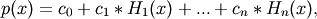
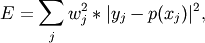
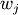
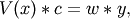

numpy.polynomial.hermite.hermfit¶
- numpy.polynomial.hermite.hermfit(x, y, deg, rcond=None, full=False, w=None)¶
Least squares fit of Hermite series to data.
Return the coefficients of a Hermite series of degree deg that is the least squares fit to the data values y given at points x. If y is 1-D the returned coefficients will also be 1-D. If y is 2-D multiple fits are done, one for each column of y, and the resulting coefficients are stored in the corresponding columns of a 2-D return. The fitted polynomial(s) are in the form

where n is deg.
Since numpy version 1.7.0, hermfit also supports NA. If any of the elements of x, y, or w are NA, then the corresponding rows of the linear least squares problem (see Notes) are set to 0. If y is 2-D, then an NA in any row of y invalidates that whole row.
Parameters : x : array_like, shape (M,)
x-coordinates of the M sample points (x[i], y[i]).
y : array_like, shape (M,) or (M, K)
y-coordinates of the sample points. Several data sets of sample points sharing the same x-coordinates can be fitted at once by passing in a 2D-array that contains one dataset per column.
deg : int
Degree of the fitting polynomial
rcond : float, optional
Relative condition number of the fit. Singular values smaller than this relative to the largest singular value will be ignored. The default value is len(x)*eps, where eps is the relative precision of the float type, about 2e-16 in most cases.
full : bool, optional
Switch determining nature of return value. When it is False (the default) just the coefficients are returned, when True diagnostic information from the singular value decomposition is also returned.
w : array_like, shape (M,), optional
Weights. If not None, the contribution of each point (x[i],y[i]) to the fit is weighted by w[i]. Ideally the weights are chosen so that the errors of the products w[i]*y[i] all have the same variance. The default value is None.
Returns : coef : ndarray, shape (M,) or (M, K)
Hermite coefficients ordered from low to high. If y was 2-D, the coefficients for the data in column k of y are in column k.
[residuals, rank, singular_values, rcond] : present when full = True
Residuals of the least-squares fit, the effective rank of the scaled Vandermonde matrix and its singular values, and the specified value of rcond. For more details, see linalg.lstsq.
Warns : RankWarning :
The rank of the coefficient matrix in the least-squares fit is deficient. The warning is only raised if full = False. The warnings can be turned off by
>>> import warnings >>> warnings.simplefilter('ignore', RankWarning)
See also
chebfit, legfit, lagfit, polyfit, hermefit
- hermval
- Evaluates a Hermite series.
- hermvander
- Vandermonde matrix of Hermite series.
- hermweight
- Hermite weight function
- linalg.lstsq
- Computes a least-squares fit from the matrix.
- scipy.interpolate.UnivariateSpline
- Computes spline fits.
Notes
The solution is the coefficients of the Hermite series p that minimizes the sum of the weighted squared errors

where the  are the weights. This problem is solved by setting up the (typically) overdetermined matrix equation

where V is the weighted pseudo Vandermonde matrix of x, c are the coefficients to be solved for, w are the weights, y are the observed values. This equation is then solved using the singular value decomposition of V.
If some of the singular values of V are so small that they are neglected, then a RankWarning will be issued. This means that the coefficient values may be poorly determined. Using a lower order fit will usually get rid of the warning. The rcond parameter can also be set to a value smaller than its default, but the resulting fit may be spurious and have large contributions from roundoff error.
Fits using Hermite series are probably most useful when the data can be approximated by sqrt(w(x)) * p(x), where w(x) is the Hermite weight. In that case the weight sqrt(w(x[i]) should be used together with data values y[i]/sqrt(w(x[i]). The weight function is available as hermweight.
References
[R58] Wikipedia, “Curve fitting”, http://en.wikipedia.org/wiki/Curve_fitting Examples
>>> from numpy.polynomial.hermite import hermfit, hermval >>> x = np.linspace(-10, 10) >>> err = np.random.randn(len(x))/10 >>> y = hermval(x, [1, 2, 3]) + err >>> hermfit(x, y, 2) array([ 0.97902637, 1.99849131, 3.00006 ])

Previous topic
numpy.polynomial.hermite.hermfromroots
Next topic
numpy.polynomial.hermite.hermvander